-------------------------------------------------------------------------------
histograms and bar graphs
-------------------------------------------------------------------------------
Highlighting sub-populations in a histogram
We can compare distributions using histogram with the by() option.
. sysuse nlsw88, clear
(NLSW, 1988 extract)
. twoway histogram wage, ///
> width(1) freq ///
> by(collgrad, note("")) ///
> name(hist1, replace)
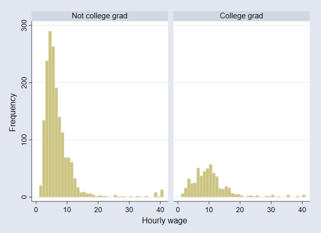
We can also highlight the part of the histogram that are college
graduates (Cox 2009)
. twoway histogram wage, ///
> width(1) freq ///
> bcolor(gs14) blw(*.4) blcolor(black) || ///
> histogram wage if collgrad, ///
> width(1) freq legend(off) ///
> bcolor(gs6) blw(*.4) blcolor(black) ///
> title(distribution of hourly wage) ///
> subtitle(college graduates highlighted) ///
> name(hist2, replace)
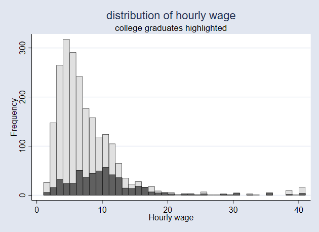
-------------------------------------------------------------------------------
index >>
-------------------------------------------------------------------------------
-------------------------------------------------------------------------------
histograms and bar graphs
-------------------------------------------------------------------------------
Highlighting bars
We can graph hbar to display the mean wage by industry.
. sysuse nlsw88, clear
(NLSW, 1988 extract)
. graph hbar (mean) wage, ///
> over(industry, descending sort(1)) ///
> name(bar1, replace)
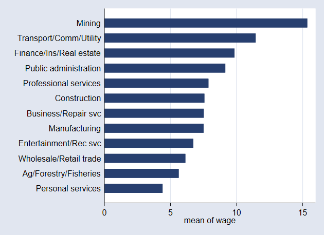
Sometimes we want to highlight one bar.
This is particularly common for presentations.
. collapse (mean) wage, by(industry)
. separate wage, by(industry == 12)
Variable Storage Display Value
name type format label Variable label
-------------------------------------------------------------------------------
wage0 float %9.0g wage, !(industry == 12)
wage1 float %9.0g wage, industry == 12
. graph hbar (asis) wage0 wage1, ///
> over(industry, descending sort(wage)) nofill ///
> bar(1, bfcolor(none)) legend(off) ///
> ytitle(mean wage) ///
> name(bar2, replace)
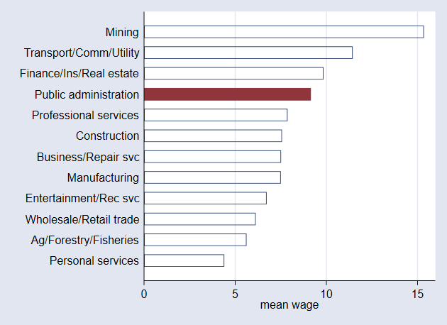
-------------------------------------------------------------------------------
<< index >>
-------------------------------------------------------------------------------
-------------------------------------------------------------------------------
scatterplots
-------------------------------------------------------------------------------
Highlighting sub-populations in a scatter plot
We may want to highlight a certain sub-polation in a scatter plot
We start with a simple scatter plot
. sysuse nlsw88, clear
(NLSW, 1988 extract)
. graph drop _all
. scatter wage grade, ///
> name(scatter1, replace)
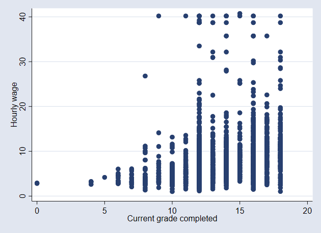
Grade is discrete, but we can show the individual values by adding the
jitter() option.
. scatter wage grade, jitter(2) ///
> name(scatter2, replace)

The jitter() option adds random noise in both the x and y direction, but
we only need a jitter in the x-direction
. gen grade2 = grade + .5*runiform()
(2 missing values generated)
. scatter wage grade2, ///
> name(scatter3, replace)
It would be nice if we could copy the variable label from grade
. label var grade2 "`: var label grade'"
. scatter wage grade2, ///
> name(scatter4, replace)
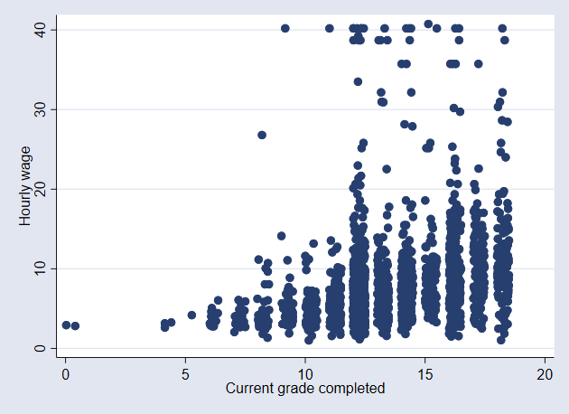
It makes more sense to display wage on a log scal
. scatter wage grade2, yscale(log) ///
> name(scatter5, replace)
But we need to adjust the axis labels a bit.
. scatter wage grade2, yscale(log) ///
> ylab(1.25 2.5 5 10 20 40) ///
> name(scatter6, replace)
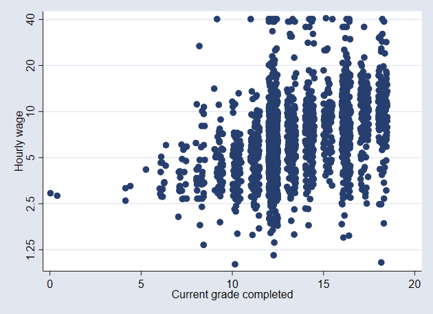
Now we can highlight the blacks
. scatter wage grade2, yscale(log) ///
> msymbol(Oh) mcolor(gs10) || ///
> scatter wage grade2 if race == 2 , ///
> msymbol(O) mcolor(gs2) ///
> yscale(log) legend(off) ///
> ylab(1.25 2.5 5 10 20 40) ///
> name(scatter7, replace)
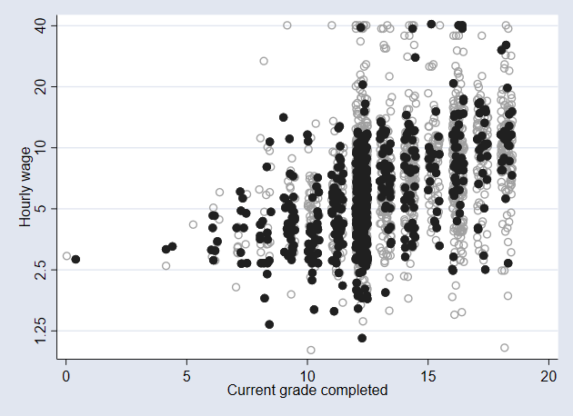
-------------------------------------------------------------------------------
<< index >>
-------------------------------------------------------------------------------
-------------------------------------------------------------------------------
scatterplots
-------------------------------------------------------------------------------
Line on top of a scatter plot
We can plot a line on top of a scatter plot
. graph drop _all
. sysuse nlsw88, clear
(NLSW, 1988 extract)
.
. gen grade2 = grade + .5*runiform()
(2 missing values generated)
. label var grade2 "`: var label grade'"
.
. fp <grade> , scale: poisson wage <grade>
(fitting 44 models)
(....10%....20%....30%....40%....50%....60%....70%....80%....90%....100%)
Fractional polynomial comparisons:
-------------------------------------------------------------------
| Test Deviance
grade | df Deviance diff. P Powers
-------------+-----------------------------------------------------
omitted | 4 15353.13 1025.547 0.000
linear | 3 14345.16 17.577 0.001 1
m = 1 | 2 14345.16 17.577 0.000 1
m = 2 | 0 14327.59 0.000 -- 3 3
-------------------------------------------------------------------
Note: Test df is degrees of freedom, and P = P > chi2 is sig. level
for tests comparing models vs. model with m = 2 based on
deviance difference, chi2.
Poisson regression Number of obs = 2,244
LR chi2(2) = 1025.55
Prob > chi2 = 0.0000
Log likelihood = -7163.793 Pseudo R2 = 0.0668
------------------------------------------------------------------------------
wage | Coefficient Std. err. z P>|z| [95% conf. interval]
-------------+----------------------------------------------------------------
grade_1 | .5388408 .0445881 12.08 0.000 .4514496 .6262319
grade_2 | -.5224457 .0572099 -9.13 0.000 -.634575 -.4103163
_cons | 1.035362 .0659192 15.71 0.000 .9061632 1.164562
------------------------------------------------------------------------------
. predict wagehat
(option n assumed; predicted number of events)
(2 missing values generated)
. twoway scatter wage grade2, ///
> yscale(log) ylab(1.25 2.5 5 10 20 40) || ///
> line wagehat grade, sort legend(off) ///
> name(fit1, replace)
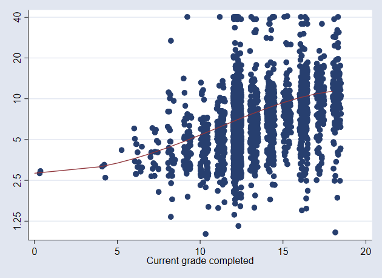
The scatter plot is a bit too dominant
. twoway scatter wage grade2, mcolor(gs10) ///
> yscale(log) ylab(1.25 2.5 5 10 20 40) || ///
> line wagehat grade, sort legend(off) ///
> name(fit2, replace)
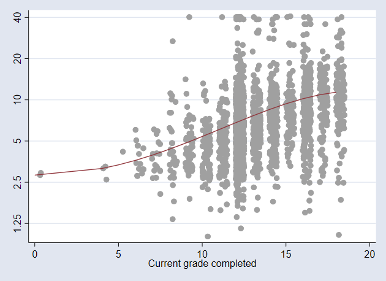
The line can be made solid
. twoway scatter wage grade2, mcolor(gs10) ///
> yscale(log) ylab(1.25 2.5 5 10 20 40) || ///
> line wagehat grade, sort legend(off) ///
> lpattern(solid) ///
> name(fit3, replace)
We can also make the line thicker
. twoway scatter wage grade2, mcolor(gs10) ///
> yscale(log) ylab(1.25 2.5 5 10 20 40) || ///
> line wagehat grade, sort legend(off) ///
> lpattern(solid) lwidth(*3) ///
> name(fit4, replace)
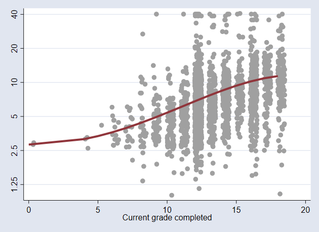
-------------------------------------------------------------------------------
<< index >>
-------------------------------------------------------------------------------
-------------------------------------------------------------------------------
scatterplots
-------------------------------------------------------------------------------
By graph
Lets look at the relationship between wage and education by industry
. graph drop _all
. sysuse nlsw88, clear
(NLSW, 1988 extract)
. gen gradej = grade + .5*runiform()
(2 missing values generated)
. label var gradej "`: var label grade'"
.
. scatter wage gradej, by(industr, note("") compact) ///
> yscale(log) ylab(1.25 2.5 5 10 20 40) ///
> name(byscatter1, replace)
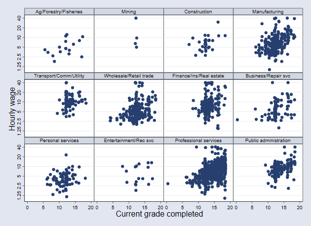
We can sort the sub graphs by mean wage
. bys industry : egen mwage = mean(wage)
. replace mwage = -mwage
(2,246 real changes made)
. egen Industry = axis(mwage industry), label(industry)
(14 missing values generated)
. scatter wage gradej, by(Industr, note("") compact) ///
> yscale(log) ylab(1.25 2.5 5 10 20 40) ///
> name(byscatter2, replace)
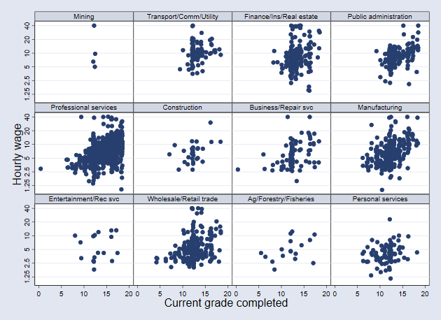
We can display the entire sample as a background graph
. sysuse nlsw88, clear
(NLSW, 1988 extract)
. keep if !missing(industry, wage, grade)
(16 observations deleted)
. bys industry : gen id = _n
. fillin industry id
.
. gen gradej = grade + .5*runiform()
(7,646 missing values generated)
. label var gradej "`: var label grade'"
.
. bys industry : egen mwage = mean(wage)
. replace mwage = -mwage
(9,876 real changes made)
. egen Industry = axis(mwage industry), label(industry)
.
. tempfile temp
. save `temp'
file C:\Users\Admin\AppData\Local\Temp\ST_f0c_000008.tmp saved as .dta format
.
. keep wage industry gradej id
. reshape wide wage gradej, j(industry) i(id)
(j = 1 2 3 4 5 6 7 8 9 10 11 12)
Data Long -> Wide
-----------------------------------------------------------------------------
Number of observations 9,876 -> 823
Number of variables 4 -> 25
j variable (12 values) industry -> (dropped)
xij variables:
wage -> wage1 wage2 ... wage12
gradej -> gradej1 gradej2 ... gradej12
-----------------------------------------------------------------------------
. merge 1:m id using `temp'
Result Number of obs
-----------------------------------------
Not matched 0
Matched 9,876 (_merge==3)
-----------------------------------------
.
. forvalues i = 1/12 {
2. local backgr `backgr' scatter wage`i' gradej`i', ///
> msymbol(Oh) mcolor(gs12) ||
3. }
.
. twoway `backgr' ///
> scatter wage gradej, ///
> msymbol(O) mcolor(black) ///
> by(Industry, legend(off) ///
> compact note("")) ///
> ytitle(wage) xtitle(grade) ///
> yscale(log) ///
> ylab(1.25 2.5 5 10 20 40) ///
> name(byscatter3, replace)

-------------------------------------------------------------------------------
<< index >>
-------------------------------------------------------------------------------
-------------------------------------------------------------------------------
line plots
-------------------------------------------------------------------------------
Line graph
Lets look at a spagetti plot
. graph drop _all
. sysuse nlsw88, clear
(NLSW, 1988 extract)
. gen ed2 = grade + 1
(2 missing values generated)
.
. bys industry : egen mwage = mean(wage)
. replace mwage = -mwage
(2,246 real changes made)
. egen Industry = axis(mwage industry), label(industry)
(14 missing values generated)
.
. gen wagehat = .
(2,246 missing values generated)
. forvalues i = 1/12 {
2. fp <ed2>, replace : poisson wage <ed2> if industry == `i'
3. predict wage`i' if e(sample)
4. replace wagehat = wage`i' if industry == `i'
5. local gr `gr' line wage`i' grade , sort ||
6. }
(fitting 44 models)
(....10%....20%....30%....40%....50%....60%....70%....80%....90%....100%)
Fractional polynomial comparisons:
-------------------------------------------------------------------
| Test Deviance
ed2 | df Deviance diff. P Powers
-------------+-----------------------------------------------------
omitted | 4 86.286 6.070 0.194
linear | 3 81.524 1.308 0.727 1
m = 1 | 2 81.178 0.962 0.618 0
m = 2 | 0 80.216 0.000 -- 3 3
-------------------------------------------------------------------
Note: Test df is degrees of freedom, and P = P > chi2 is sig. level
for tests comparing models vs. model with m = 2 based on
deviance difference, chi2.
Poisson regression Number of obs = 17
LR chi2(2) = 6.07
Prob > chi2 = 0.0481
Log likelihood = -40.108089 Pseudo R2 = 0.0703
------------------------------------------------------------------------------
wage | Coefficient Std. err. z P>|z| [95% conf. interval]
-------------+----------------------------------------------------------------
ed2_1 | .0026413 .0015905 1.66 0.097 -.000476 .0057586
ed2_2 | -.0008486 .0005314 -1.60 0.110 -.0018901 .0001929
_cons | .7990031 .4674919 1.71 0.087 -.1172642 1.71527
------------------------------------------------------------------------------
(option n assumed; predicted number of events)
(2,229 missing values generated)
(17 real changes made)
(fitting 44 models)
(....10%....20%....30%....40%....50%....60%....70%....80%....90%....100%)
Fractional polynomial comparisons:
-------------------------------------------------------------------
| Test Deviance
ed2 | df Deviance diff. P Powers
-------------+-----------------------------------------------------
omitted | 2 62.963 0.000 1.000
linear | 2 62.963 0.000 1.000 1
m = 1 | 1 62.963 0.000 1.000 -2
m = 2 | 0 62.963 0.000 -- -2 -2
-------------------------------------------------------------------
Note: Test df is degrees of freedom, and P = P > chi2 is sig. level
for tests comparing models vs. model with m = 2 based on
deviance difference, chi2.
Poisson regression Number of obs = 4
LR chi2(0) = -0.00
Prob > chi2 = .
Log likelihood = -31.481608 Pseudo R2 = -0.0000
------------------------------------------------------------------------------
wage | Coefficient Std. err. z P>|z| [95% conf. interval]
-------------+----------------------------------------------------------------
ed2_1 | 0 (omitted)
ed2_2 | 0 (omitted)
_cons | 2.731089 .1276208 21.40 0.000 2.480957 2.981221
------------------------------------------------------------------------------
(option n assumed; predicted number of events)
(2,242 missing values generated)
(4 real changes made)
(fitting 44 models)
(....10%....20%....30%....40%....50%....60%....70%....80%....90%....100%)
Fractional polynomial comparisons:
-------------------------------------------------------------------
| Test Deviance
ed2 | df Deviance diff. P Powers
-------------+-----------------------------------------------------
omitted | 4 178.590 26.619 0.000
linear | 3 157.834 5.863 0.118 1
m = 1 | 2 155.601 3.630 0.163 3
m = 2 | 0 151.971 0.000 -- -2 -1
-------------------------------------------------------------------
Note: Test df is degrees of freedom, and P = P > chi2 is sig. level
for tests comparing models vs. model with m = 2 based on
deviance difference, chi2.
Poisson regression Number of obs = 29
LR chi2(2) = 26.62
Prob > chi2 = 0.0000
Log likelihood = -75.985466 Pseudo R2 = 0.1491
------------------------------------------------------------------------------
wage | Coefficient Std. err. z P>|z| [95% conf. interval]
-------------+----------------------------------------------------------------
ed2_1 | 659.2548 169.8953 3.88 0.000 326.2661 992.2436
ed2_2 | -129.3304 29.20694 -4.43 0.000 -186.575 -72.08586
_cons | 7.916284 1.217063 6.50 0.000 5.530885 10.30168
------------------------------------------------------------------------------
(option n assumed; predicted number of events)
(2,217 missing values generated)
(29 real changes made)
(fitting 44 models)
(....10%....20%....30%....40%....50%....60%....70%....80%....90%....100%)
Fractional polynomial comparisons:
-------------------------------------------------------------------
| Test Deviance
ed2 | df Deviance diff. P Powers
-------------+-----------------------------------------------------
omitted | 4 2371.656 191.684 0.000
linear | 3 2193.047 13.076 0.004 1
m = 1 | 2 2181.346 1.374 0.503 3
m = 2 | 0 2179.972 0.000 -- .5 .5
-------------------------------------------------------------------
Note: Test df is degrees of freedom, and P = P > chi2 is sig. level
for tests comparing models vs. model with m = 2 based on
deviance difference, chi2.
Poisson regression Number of obs = 366
LR chi2(2) = 191.68
Prob > chi2 = 0.0000
Log likelihood = -1089.9859 Pseudo R2 = 0.0808
------------------------------------------------------------------------------
wage | Coefficient Std. err. z P>|z| [95% conf. interval]
-------------+----------------------------------------------------------------
ed2_1 | -8.405453 1.958896 -4.29 0.000 -12.24482 -4.566087
ed2_2 | 2.014951 .4257893 4.73 0.000 1.18042 2.849483
_cons | 13.60704 3.119369 4.36 0.000 7.493194 19.7209
------------------------------------------------------------------------------
(option n assumed; predicted number of events)
(1,880 missing values generated)
(366 real changes made)
(fitting 44 models)
(....10%....20%....30%....40%....50%....60%....70%....80%....90%....100%)
Fractional polynomial comparisons:
-------------------------------------------------------------------
| Test Deviance
ed2 | df Deviance diff. P Powers
-------------+-----------------------------------------------------
omitted | 4 614.541 5.878 0.208
linear | 3 612.125 3.462 0.326 1
m = 1 | 2 610.776 2.113 0.348 -2
m = 2 | 0 608.664 0.000 -- -2 -2
-------------------------------------------------------------------
Note: Test df is degrees of freedom, and P = P > chi2 is sig. level
for tests comparing models vs. model with m = 2 based on
deviance difference, chi2.
Poisson regression Number of obs = 90
LR chi2(2) = 5.88
Prob > chi2 = 0.0529
Log likelihood = -304.33176 Pseudo R2 = 0.0096
------------------------------------------------------------------------------
wage | Coefficient Std. err. z P>|z| [95% conf. interval]
-------------+----------------------------------------------------------------
ed2_1 | -994.1185 674.1365 -1.47 0.140 -2315.402 327.1648
ed2_2 | 439.7353 314.1076 1.40 0.162 -175.9043 1055.375
_cons | 1.626314 .7887816 2.06 0.039 .0803306 3.172298
------------------------------------------------------------------------------
(option n assumed; predicted number of events)
(2,156 missing values generated)
(90 real changes made)
(fitting 44 models)
(....10%....20%....30%....40%....50%....60%....70%....80%....90%....100%)
Fractional polynomial comparisons:
-------------------------------------------------------------------
| Test Deviance
ed2 | df Deviance diff. P Powers
-------------+-----------------------------------------------------
omitted | 4 2156.287 73.605 0.000
linear | 3 2086.225 3.542 0.315 1
m = 1 | 2 2085.079 2.397 0.302 .5
m = 2 | 0 2082.682 0.000 -- 3 3
-------------------------------------------------------------------
Note: Test df is degrees of freedom, and P = P > chi2 is sig. level
for tests comparing models vs. model with m = 2 based on
deviance difference, chi2.
Poisson regression Number of obs = 333
LR chi2(2) = 73.60
Prob > chi2 = 0.0000
Log likelihood = -1041.3412 Pseudo R2 = 0.0341
------------------------------------------------------------------------------
wage | Coefficient Std. err. z P>|z| [95% conf. interval]
-------------+----------------------------------------------------------------
ed2_1 | .0021576 .0005586 3.86 0.000 .0010628 .0032524
ed2_2 | -.0006669 .000184 -3.62 0.000 -.0010276 -.0003062
_cons | .8044136 .1905101 4.22 0.000 .4310207 1.177807
------------------------------------------------------------------------------
(option n assumed; predicted number of events)
(1,913 missing values generated)
(333 real changes made)
(fitting 44 models)
(....10%....20%....30%....40%....50%....60%....70%....80%....90%....100%)
Fractional polynomial comparisons:
-------------------------------------------------------------------
| Test Deviance
ed2 | df Deviance diff. P Powers
-------------+-----------------------------------------------------
omitted | 4 1737.107 73.345 0.000
linear | 3 1666.249 2.487 0.478 1
m = 1 | 2 1665.643 1.882 0.390 0
m = 2 | 0 1663.762 0.000 -- -2 -2
-------------------------------------------------------------------
Note: Test df is degrees of freedom, and P = P > chi2 is sig. level
for tests comparing models vs. model with m = 2 based on
deviance difference, chi2.
Poisson regression Number of obs = 192
LR chi2(2) = 73.35
Prob > chi2 = 0.0000
Log likelihood = -831.88086 Pseudo R2 = 0.0422
------------------------------------------------------------------------------
wage | Coefficient Std. err. z P>|z| [95% conf. interval]
-------------+----------------------------------------------------------------
ed2_1 | 648.0126 294.5432 2.20 0.028 70.71854 1225.307
ed2_2 | -377.2919 139.903 -2.70 0.007 -651.4967 -103.0871
_cons | 4.053157 .3835413 10.57 0.000 3.30143 4.804884
------------------------------------------------------------------------------
(option n assumed; predicted number of events)
(2,054 missing values generated)
(192 real changes made)
(fitting 44 models)
(....10%....20%....30%....40%....50%....60%....70%....80%....90%....100%)
Fractional polynomial comparisons:
-------------------------------------------------------------------
| Test Deviance
ed2 | df Deviance diff. P Powers
-------------+-----------------------------------------------------
omitted | 4 641.527 49.335 0.000
linear | 3 595.436 3.244 0.355 1
m = 1 | 2 595.436 3.244 0.197 1
m = 2 | 0 592.192 0.000 -- 3 3
-------------------------------------------------------------------
Note: Test df is degrees of freedom, and P = P > chi2 is sig. level
for tests comparing models vs. model with m = 2 based on
deviance difference, chi2.
Poisson regression Number of obs = 86
LR chi2(2) = 49.33
Prob > chi2 = 0.0000
Log likelihood = -296.0959 Pseudo R2 = 0.0769
------------------------------------------------------------------------------
wage | Coefficient Std. err. z P>|z| [95% conf. interval]
-------------+----------------------------------------------------------------
ed2_1 | .0025188 .0008848 2.85 0.004 .0007846 .0042531
ed2_2 | -.0007744 .0002898 -2.67 0.008 -.0013425 -.0002064
_cons | .7632976 .3117176 2.45 0.014 .1523424 1.374253
------------------------------------------------------------------------------
(option n assumed; predicted number of events)
(2,160 missing values generated)
(86 real changes made)
(fitting 44 models)
(....10%....20%....30%....40%....50%....60%....70%....80%....90%....100%)
Fractional polynomial comparisons:
-------------------------------------------------------------------
| Test Deviance
ed2 | df Deviance diff. P Powers
-------------+-----------------------------------------------------
omitted | 4 423.050 4.860 0.302
linear | 3 418.671 0.480 0.923 1
m = 1 | 2 418.591 0.400 0.819 2
m = 2 | 0 418.191 0.000 -- -2 -1
-------------------------------------------------------------------
Note: Test df is degrees of freedom, and P = P > chi2 is sig. level
for tests comparing models vs. model with m = 2 based on
deviance difference, chi2.
Poisson regression Number of obs = 97
LR chi2(2) = 4.86
Prob > chi2 = 0.0881
Log likelihood = -209.09541 Pseudo R2 = 0.0115
------------------------------------------------------------------------------
wage | Coefficient Std. err. z P>|z| [95% conf. interval]
-------------+----------------------------------------------------------------
ed2_1 | 130.0095 106.6677 1.22 0.223 -79.05536 339.0743
ed2_2 | -30.43477 20.82213 -1.46 0.144 -71.24539 10.37584
_cons | 3.075397 .9746499 3.16 0.002 1.165118 4.985675
------------------------------------------------------------------------------
(option n assumed; predicted number of events)
(2,149 missing values generated)
(97 real changes made)
(fitting 44 models)
(....10%....20%....30%....40%....50%....60%....70%....80%....90%....100%)
Fractional polynomial comparisons:
-------------------------------------------------------------------
| Test Deviance
ed2 | df Deviance diff. P Powers
-------------+-----------------------------------------------------
omitted | 4 100.921 5.516 0.238
linear | 3 99.544 4.139 0.247 1
m = 1 | 2 98.785 3.379 0.185 3
m = 2 | 0 95.405 0.000 -- -2 -2
-------------------------------------------------------------------
Note: Test df is degrees of freedom, and P = P > chi2 is sig. level
for tests comparing models vs. model with m = 2 based on
deviance difference, chi2.
Poisson regression Number of obs = 17
LR chi2(2) = 5.52
Prob > chi2 = 0.0634
Log likelihood = -47.702622 Pseudo R2 = 0.0547
------------------------------------------------------------------------------
wage | Coefficient Std. err. z P>|z| [95% conf. interval]
-------------+----------------------------------------------------------------
ed2_1 | 1538.059 669.9163 2.30 0.022 225.0476 2851.071
ed2_2 | -783.1929 337.3305 -2.32 0.020 -1444.348 -122.0373
_cons | 4.459298 1.073041 4.16 0.000 2.356176 6.56242
------------------------------------------------------------------------------
(option n assumed; predicted number of events)
(2,229 missing values generated)
(17 real changes made)
(fitting 44 models)
(....10%....20%....30%....40%....50%....60%....70%....80%....90%....100%)
Fractional polynomial comparisons:
-------------------------------------------------------------------
| Test Deviance
ed2 | df Deviance diff. P Powers
-------------+-----------------------------------------------------
omitted | 4 5214.918 468.916 0.000
linear | 3 4752.161 6.159 0.104 1
m = 1 | 2 4752.161 6.159 0.046 1
m = 2 | 0 4746.002 0.000 -- 3 3
-------------------------------------------------------------------
Note: Test df is degrees of freedom, and P = P > chi2 is sig. level
for tests comparing models vs. model with m = 2 based on
deviance difference, chi2.
Poisson regression Number of obs = 823
LR chi2(2) = 468.92
Prob > chi2 = 0.0000
Log likelihood = -2373.0012 Pseudo R2 = 0.0899
------------------------------------------------------------------------------
wage | Coefficient Std. err. z P>|z| [95% conf. interval]
-------------+----------------------------------------------------------------
ed2_1 | .0015904 .0003063 5.19 0.000 .0009901 .0021908
ed2_2 | -.0004678 .0000987 -4.74 0.000 -.0006613 -.0002743
_cons | .9341858 .1233811 7.57 0.000 .6923632 1.176008
------------------------------------------------------------------------------
(option n assumed; predicted number of events)
(1,423 missing values generated)
(823 real changes made)
(fitting 44 models)
(....10%....20%....30%....40%....50%....60%....70%....80%....90%....100%)
Fractional polynomial comparisons:
-------------------------------------------------------------------
| Test Deviance
ed2 | df Deviance diff. P Powers
-------------+-----------------------------------------------------
omitted | 4 1068.569 98.960 0.000
linear | 3 972.108 2.499 0.475 1
m = 1 | 2 969.831 0.222 0.895 3
m = 2 | 0 969.609 0.000 -- 3 3
-------------------------------------------------------------------
Note: Test df is degrees of freedom, and P = P > chi2 is sig. level
for tests comparing models vs. model with m = 2 based on
deviance difference, chi2.
Poisson regression Number of obs = 176
LR chi2(2) = 98.96
Prob > chi2 = 0.0000
Log likelihood = -484.80427 Pseudo R2 = 0.0926
------------------------------------------------------------------------------
wage | Coefficient Std. err. z P>|z| [95% conf. interval]
-------------+----------------------------------------------------------------
ed2_1 | -.0002407 .0008374 -0.29 0.774 -.0018821 .0014006
ed2_2 | .0001278 .0002707 0.47 0.637 -.0004028 .0006583
_cons | 1.83251 .32752 5.60 0.000 1.190583 2.474438
------------------------------------------------------------------------------
(option n assumed; predicted number of events)
(2,070 missing values generated)
(176 real changes made)
. sort industry grade
. twoway line wagehat grade, connect(L) name(spagetti1, replace)
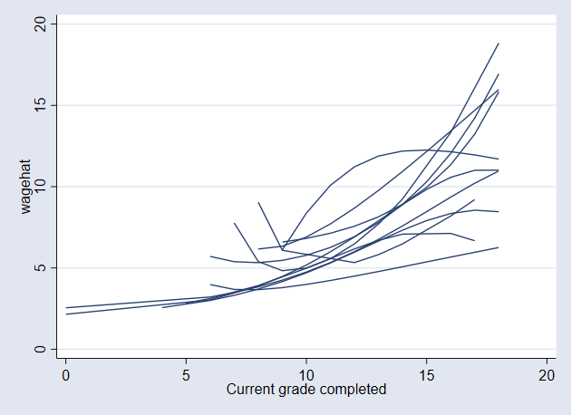
Maybe this becomes more informative if we plot these lines by industry
with all the lines as a grey background (Cox 2010)
. bys Industry : gen id = _n
. fillin Industry id
. tempfile temp
. save `temp'
file C:\Users\Admin\AppData\Local\Temp\ST_f0c_000008.tmp saved as .dta format
. forvalues i = 1/12 {
2. bys id (wage`i') : replace wage`i' = wage`i'[1]
3. by id : gen grade`i' = grade[1]
4. }
(204 real changes made)
(8,411 missing values generated)
(48 real changes made)
(8,567 missing values generated)
(348 real changes made)
(8,424 missing values generated)
(4,392 real changes made)
(5,356 missing values generated)
(1,080 real changes made)
(7,956 missing values generated)
(3,996 real changes made)
(5,811 missing values generated)
(2,304 real changes made)
(7,241 missing values generated)
(1,032 real changes made)
(8,021 missing values generated)
(1,164 real changes made)
(7,826 missing values generated)
(204 real changes made)
(8,632 missing values generated)
(9,876 real changes made)
(13 missing values generated)
(2,112 real changes made)
(7,189 missing values generated)
. keep if Industry == 1
(9,888 observations deleted)
. keep id grade? grade?? wage? wage??
. merge 1:m id using `temp'
(label Industry already defined)
(label indlbl already defined)
(label unionlbl already defined)
(label ccitylbl already defined)
(label southlbl already defined)
(label occlbl already defined)
(label nev_mar already defined)
(label marlbl already defined)
(label racelbl already defined)
(label smsalbl already defined)
(label gradlbl already defined)
Result Number of obs
-----------------------------------------
Not matched 0
Matched 10,712 (_merge==3)
-----------------------------------------
.
. local gr ""
. forvalues i = 1/12 {
2. local gr `gr' line wage`i' grade`i' , ///
> lpattern(solid) lcolor(gs12) sort ||
3. }
.
. twoway `gr' ///
> line wagehat grade , ///
> by(Industry, legend(off) compact note("")) ///
> sort yscale(log) ylab(2.5 5 10 20) ///
> lpattern(solid) lcolor(black) lwidth(*3) ///
> xtitle(grade) ytitle(predicted wage) ///
> name(spagetti2, replace)
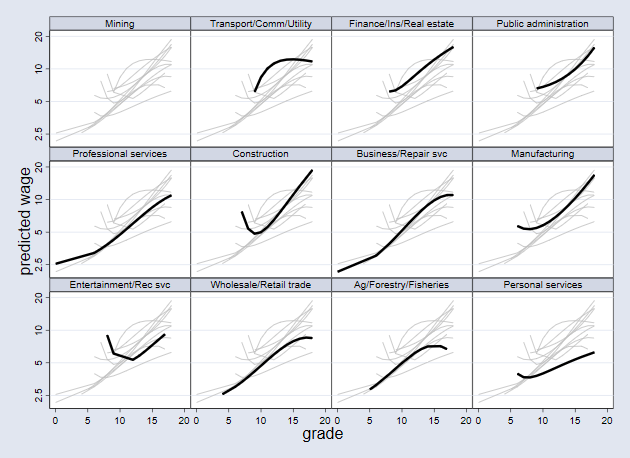
We can also display a "rug" underneat to show the number of observations
on which these lines are based (Cox 2004).
. gen pipe = "|"
. gen y = 1.8
. gen gradej = grade + .5*runiform()
(8,468 missing values generated)
. local gr ""
. forvalues i = 1/12 {
2. local gr `gr' line wage`i' grade`i' , ///
> lpattern(solid) lcolor(gs12) sort ||
3. }
.
. twoway `gr' ///
> line wagehat grade , ///
> by(Industry, legend(off) compact note("")) ///
> sort yscale(log) ylab(2.5 5 10 20) ///
> lpattern(solid) lcolor(black) lwidth(*3) ///
> xtitle(grade) ytitle(predicted wage) || ///
> scatter y gradej, ///
> mlabel(pipe) mlabpos(0) mlabsize(vsmall) ///
> msymbol(i) name(spagetti3, replace)
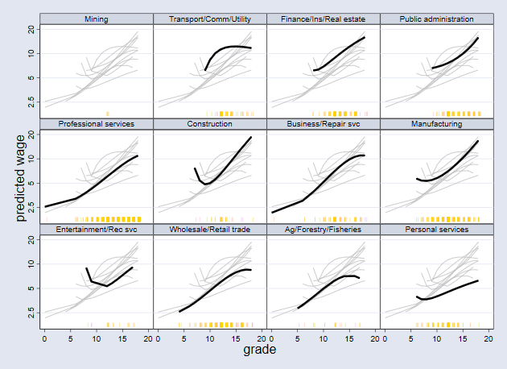
-------------------------------------------------------------------------------
<< index
-------------------------------------------------------------------------------
Bibliography
Nicholas J. Cox (2004), "Speaking Stata: Graphing distributions", The
Stata Journal, 4(1), pp. 66-88.
Nicholas J. Cox (2009), "Stata tip 78: Going gray gracefully:
Highlighting subsets and downplaying substrates", The Stata Journal,
9(3), pp. 499-503.
Nicholas J. Cox (2010), "Speaking Stata: Graphing subsets", The Stata
Journal, 20(4), pp. 670-681.
-------------------------------------------------------------------------------
index
-------------------------------------------------------------------------------